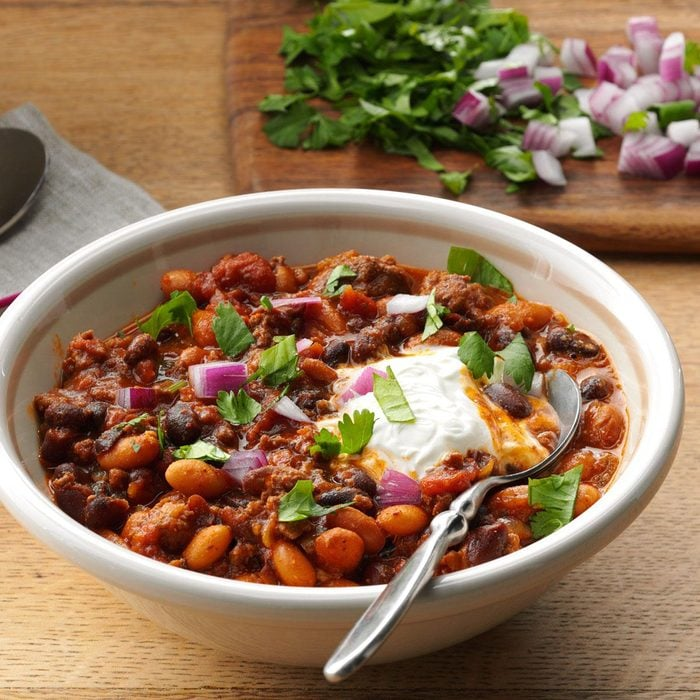

Chili

Description
This chili may be already chock-full, but we love to build it up even more with toppings like pico de gallo, red onion, cilantro and cheese. —Mallory Lynch, Madison, Wisconsin
Ingredients
- 1 pound lean ground beef (90% lean)
- 1 large sweet onion, chopped
- 3 garlic cloves, minced
- 2 cans (14-1/2 ounces each) diced tomatoes with mild green chiles
- 2 cans (15 ounces each) pinto beans, rinsed and drained
- 2 cans (15 ounces each) black beans, rinsed and drained
- 2 to 3 tablespoons chili powder
- 2 teaspoons ground cumin
- 1/2 teaspoon salt
Steps
- In a large skillet, cook beef, onion and garlic over medium heat 6-8 minutes or until beef is no longer pink, breaking beef into crumbles; drain.
- Transfer beef mixture to a 5-qt. slow cooker. Drain 1 can of tomatoes, discarding liquid; add to slow cooker. Stir in beans, chili powder, cumin, salt and remaining tomatoes. Cook, covered, on low 6-8 hours to allow flavors to blend.
- Mash beans to desired consistency. Serve with toppings as desired.